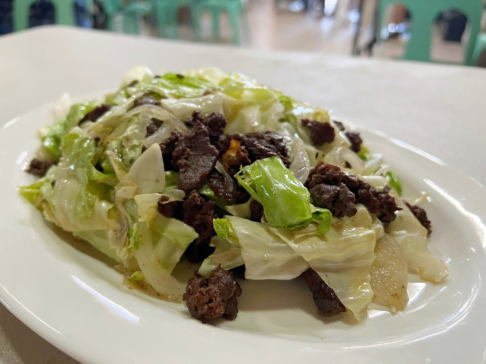
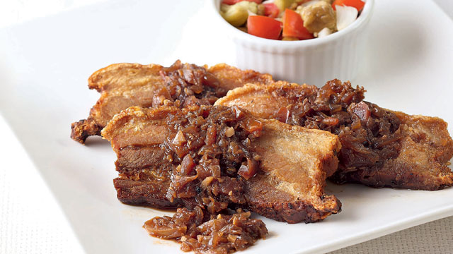
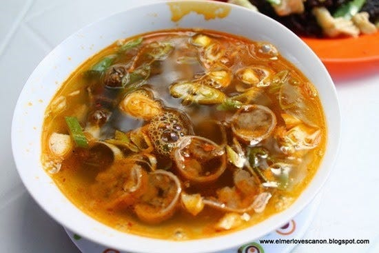
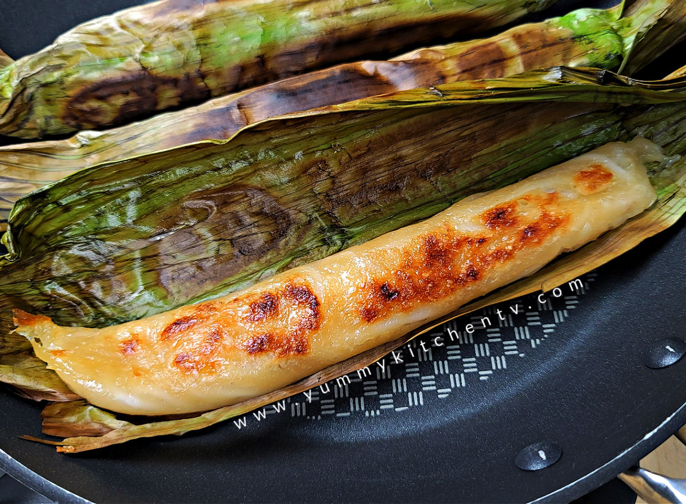

| Image | Name | Cuisine Description |
|---|---|---|
|  | Pigar-Pigar | Originated in Dagupan, Pangasinan. A stir-fried dish that usually has thinly sliced beef/carabeef and liver. The meat is cooked with onions, bell peppers, cabbage and carrots. This is seasoned with soy sauce and calamansi. |
 |
Pinakbet | Also known as Pakbet. A dish with a mix of vegetables such as: eggplant, ampalaya, string beans, okra, and kalabasa. The dish is usually sauteed in shrimp paste and also has meat(usually pork belly). |
|  | Lechon Bagoong | Since Filipinos love them, Pangasinan made a dish which combines lecon and bagoong. This dish is a twist on binagoongan(uses pork belly). |
|  | Kaleskes | Originated in Dagupan, Pangasinan. This dish is prepared with carabao/cow tripe or goat/pig innards. These main ingredients are cooked in a soup. |
|  | Tupig | Known as a kakanin/roasted sticky rice. Made with glutinous rice, coconut milk, muscavado sugar, and young coconut strips. This is wrapped in banana leaves then charred. |